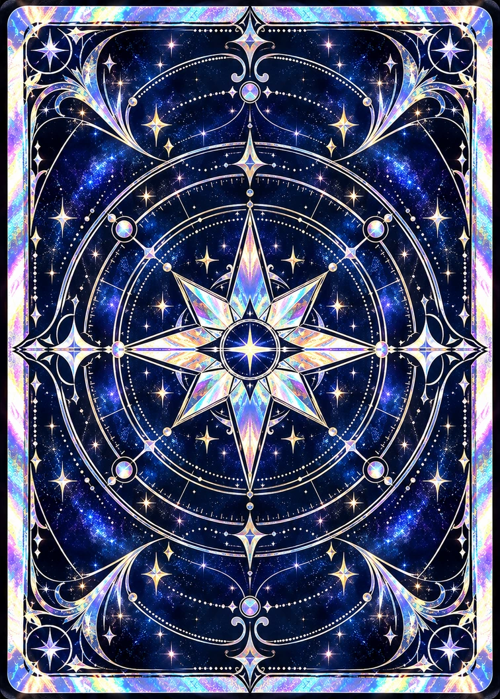

A SMALL RITUAL FOR YOUR DAY
One card.
A little clarity.
Take a breath. Make room for a different perspective.
Your day is still yours to shape.

Preparing your daily ritual…
One free card · 78 possibilities · No sign-up
A small step today
Keep what resonates. Leave what doesn’t.
A new card awaits after your local midnight.
01
Pause, then reveal
You don’t need a wish or a perfect question. A moment of curiosity is enough.
02
A perspective, not a prediction
Upright and reversed cards offer different angles for reflection—not good or bad omens.
03
Come back to yourself
These are curated English reflections, not live AI readings. Your choices remain your own.